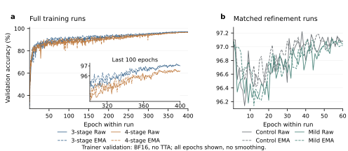
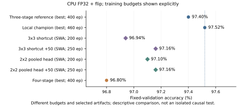
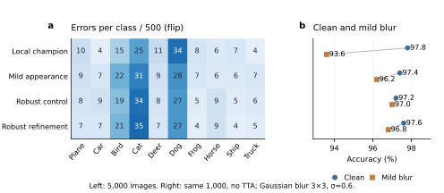
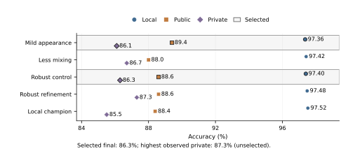

Deep Learning Project 1 | Fall 2026
Public code repository: https://github.com/nyu-zzc/cifar10-resnet-project
I investigated how residual-network architecture, training, and regularization affect CIFAR-10 competition performance under a strict five-million-parameter limit. The completed study contains 79 training runs and 7,810 epochs, spanning short screens, full training, and controlled continuations. A three-stage Wide Residual Network with 4,480,474 parameters achieved the highest local validation accuracy, 97.52%. A mild-appearance-augmentation variant of the same architecture achieved the highest observed public score, 89.40%. The strongest observed private score was 87.30% from a 4,948,626-parameter robust model, but that submission was not selected for final evaluation. The best private score among the two selected submissions was 86.30%. A four-stage model trained for 400 epochs reached only 96.80% locally. These results favor careful validation and augmentation selection over simply adding stages or extending training, while also exposing a substantial gap between local and competition performance.
The objective was to maximize classification accuracy on the held-out competition images using a modified ResNet [1] with at most 5,000,000 trainable parameters. I used only the supplied competition data: 50,000 labeled 32 × 32 RGB images and 2,000 test images. A fixed, stratified split assigned 45,000 labeled images to training and 5,000 to validation, with dataset seed 42 and 500 validation images per class. The split was not changed during model search. No external training images or pretrained weights were used; distillation teachers also originated from project training.
Local validation, public leaderboard, and private leaderboard accuracy are distinct quantities throughout this report. Final deployment comparisons use the same 5,000 validation images, CPU FP32, two threads, and batch size 64. “Flip” means averaging the original-image and horizontally flipped-image probabilities of one checkpoint; it is not a multi-model ensemble. Training-time BF16 scores are labeled separately. Public and private results are transcribed from the supplied Kaggle submission evidence, not reconstructed from hidden labels.
Robustness checks use the same fixed, stratified set of 1,000 validation images (seed 2026), evaluated without flip averaging under brightness, darkness, grayscale, and mild blur transformations. I report clean-subset accuracy as well as transformed accuracy, so an absolute proxy increase is not automatically interpreted as improved robustness. The four transformations are repeated measurements of 1,000 images, not 4,000 independent examples. Validation images, their transformations, and their labels were never added to training or used for distillation or hard-example sampling.
Residual shortcuts provide a direct path around learned transformations [1]. The main model follows the pre-activation design [2] and Wide Residual Networks [3]: a 16-channel stem, three stages of four residual blocks, two 3 × 3 convolutions per block, 1 × 1 projections where dimensions change, and global average pooling. Width was constrained to fit the course budget. The best local and public models share this architecture; they differ in training and checkpoint selection.
Table 1. Architectures used for the principal comparisons.
| Model | Blocks / stage widths | Parameters |
|---|---|---|
| WRN-28 × 3.5 | [4,4,4] / [56,112,224] | 4,480,474 |
| Robust WRN + SE | [4,4,4] / [58,116,232] | 4,948,626 |
| Four-stage residual net | [3,3,3,3] / [32,65,130,260] | 4,496,043 |
| Uploaded Efficient ResNet | [4,4,3] / [64,128,256] | 4,697,742 |
The robust WRN adds squeeze-and-excitation (SE) with bottleneck channel fraction 0.25 [4]. The four-stage model preserves pre-activation blocks but changes block allocation, widths, and downsampling: spatial sizes become 32, 16, 8, and 4, followed by 4 × 4 average pooling. Its result therefore tests an architecture package, not the causal effect of stage count alone. The uploaded baseline uses post-activation blocks and SE only after the stem; its supplied pretrained file was not loaded.
The robust branch uses RandAugment N = 2, M = 5, color jitter 0.2, grayscale probability 0.1, blur probability 0.05, Mixup alpha 0.4, mixing probability 0.6, and no label smoothing. It trains for 300 epochs before a 60-epoch continuation (0.003 to 0.00001; SWA 45-60). Its further 50-epoch stage uses 0.0005 to 0.00001; the strongest observed private submission selects EMA epoch 29, not SWA.
The main 400-epoch recipe uses SGD with Nesterov momentum 0.9, weight decay 0.0005, batch size 128, five warmup epochs, and cosine decay from learning rate 0.1 to 0.0001. Cosine decay is related to SGDR [5], but warm restarts were not used. Inputs are cropped with four-pixel reflection padding and flipped, augmented with RandAugment (N = 2, M = 7) [6], then normalized by mean (0.4914, 0.4822, 0.4465) and standard deviation (0.2470, 0.2435, 0.2616). Mixup alpha 0.2 [7], CutMix alpha 1.0 [8], mixing probability 0.8, and label smoothing 0.05 [9] are applied jointly.
An exponential moving average (EMA, ramped decay capped at 0.999) and stochastic weight averaging (SWA) [10] are evaluated as separate artifacts. SWA averages late weights and re-estimates batch-normalization statistics using training data. This implementation averages along the configured decaying schedule; it does not reproduce the original SWA constant/cyclic learning-rate recipe exactly. Checkpoint selection always records whether weights are raw, EMA, or SWA.
The mild-appearance model starts from epoch 396 of the 400-epoch WRN run and trains a new 60-epoch stage: learning rate 0.003 to 0.00001, three warmup epochs, and SWA over epochs 45-60. It adds brightness/contrast/saturation jitter 0.15 (hue 0.0375), grayscale probability 0.05, and Gaussian-blur probability 0.03 (kernel 3; sigma uniformly sampled from 0.1 to 1.0). Other augmentation and optimization choices remain fixed. The submitted model is SWA plus flip averaging. Its weight lineage is 396 + 60 = 456 epochs; actual branch computation is 400 + 60 = 460 epochs. Continuation resets optimizer and averaging state and is not uninterrupted resumption.
The final inventory contains 79 completed real-data training runs across 19 queues: 39 short screens (1,980 epochs), 18 full runs from random initialization (4,400 epochs), and 22 continuations (1,430 epochs). Summed epoch timings total 46.10 hours, excluding audits and other overhead. Every run has a continuous epoch log; SWA, EMA, inference audits, and quantization are not counted as additional training runs. Seven continuation best checkpoints remained at inherited epoch zero and were not presented as new improvements.
Table 2. Completed experimental coverage; these are representative trials, not exhaustive tuning.
| Design dimension | Variables actually tried |
|---|---|
| Residual architecture | Depth 16/22/28/40; nonuniform block allocation; channel widths; three/four stages |
| Convolution and shortcuts | 3 × 3 / 5 × 5 main kernels; projection / zero-padding / average-pool projection; 3 × 3 projection |
| Pooling | Global average, max, average-max, and a 4 × 4 pool retaining a 2 × 2 feature grid |
| Optimization and schedule | SGD, Adam, AdamW, RMSProp, SAM; cosine, linear, multistep; batch sizes 64/128/256 |
| Augmentation | RandAugment, AutoAugment, Mixup, CutMix, Cutout, random erasing, single-view AugMix, photometric transforms |
| Regularization and deployment | Weight decay, dropout, stochastic depth, label smoothing, EMA, SWA, scratch-teacher distillation, INT8 |

Short screens identified candidates rather than establishing final rankings. For example, 40-epoch Mixup-only reached 95.46% versus 94.94% for its screen baseline. In a separate 60-epoch screen, custom channels reached 95.90% versus 95.60% for its baseline. These are trainer BF16 scores without test-time augmentation. Selected configurations were then trained longer and independently audited in FP32; a short-horizon advantage was not assumed to persist.

The four-stage run completed all 400 epochs and selected raw epoch 394. Its primary best-checkpoint result was 96.80%, compared with 97.40% for the original 400-epoch WRN and 97.52% for the current local champion. Relative to the latter, it corrected 37 images but introduced 73 errors, a net loss of 36/5,000. Its SWA result was 96.70%. Increasing stage count within a fixed parameter budget therefore did not improve this tested configuration; the result does not establish that every four-stage design is inferior.
Table 3. Additional complete comparisons. Values are CPU FP32 validation percentages.
| Comparison / endpoint | Control | Variant | Interpretation |
|---|---|---|---|
| 3 × 3 shortcut, SWA / no flip | 96.80 | 96.78 | 200 epochs; −1 image |
| P4 pooling, SWA / no flip | 96.80 | 96.80 | 200 epochs; tied |
| Efficient ResNet + Mixup, final / no flip | 96.06 | 96.44 | 200 epochs; +19 images |
| Mixup continuation, final / no flip | 96.44 | 96.44 | Additional 50; tied |
| Mixup continuation, final / flip | 96.68 | 96.82 | Secondary endpoint; +7 images |
The K3 and P4 studies used the original 200-epoch SWA control as their primary reference. Each received a 50-epoch low-learning-rate confirmation after its late training curve was still improving; their final SWA/flip accuracies both reached 97.16%. Neither displaced the local champion. A single peak or a one-image difference was insufficient to justify repeated restarts.
The uploaded Efficient ResNet [20] was also trained from scratch for 200 epochs using its SGD/Lookahead recipe [11]. Its best no-flip accuracy was 96.18%. Adding only Mixup improved the predeclared final-epoch endpoint, but further continuation left that endpoint unchanged. Different normalization, architecture, and training recipes make this a separate model family, not a clean architecture-only ablation.
The local champion makes 124 validation errors. Of these, 51 are direct cat-dog confusions (21 cats predicted as dogs and 30 dogs predicted as cats), and the true class ranks second in 91 errors. Visual inspection suggested ambiguity from small objects, unusual poses, occlusion, and weak facial detail. These observations generate hypotheses; they do not prove causal explanations or justify changing labels. The robust refinement's EMA checkpoint at phase epoch 29 and the local champion, both evaluated with flip averaging, share 80 errors, suggesting that many difficult examples persist across the two model families.

Table 4. Matched refinements of the same WRN source; primary endpoint is SWA plus flip.
| Intervention | Control | Variant | Net correct / 5,000 |
|---|---|---|---|
| Blur probability 0.05, seed 42 | 97.34 | 97.38 | +2 |
| Blur probability 0.05, seed 43 | 97.42 | 97.32 | −5 |
| Label smoothing 0.05 → 0, seed 42 | 97.34 | 97.38 | +2 |
The mild-appearance SWA model tied its matched no-appearance SWA control at 97.36% with flip averaging, while improving the blur proxy by 19/1,000 images (94.30% to 96.20%). This justified retaining it as a generalization candidate. A later blur-only intervention improved the proxy but failed to produce a repeatable clean-accuracy gain: its two continuation seeds had opposite signs. These are two continuation seeds initialized from the same project-trained checkpoint, not independent from-scratch replications.
The local champion is underconfident on average (86.24% mean confidence versus 97.52% accuracy), but this alone does not show that label smoothing causes mistakes. Removing smoothing while retaining Mixup/CutMix added only two correct SWA predictions and remained below the champion. Single-view AugMix [12] also failed to improve its matched SWA endpoint across the tested continuation seeds. I stopped these directions rather than treating better calibration or a corruption proxy as classification gains.
Table 5. Five unique submissions visible in the final supplied Kaggle screenshot. All entries use flip averaging.
| Submission / model | Params (M) | Local (%) | Public (%) | Private (%) | Selected |
|---|---|---|---|---|---|
| Mild appearance SWA / WRN | 4.480 | 97.36 | 89.40 | 86.10 | Yes |
| Less mixing SWA / Robust | 4.949 | 97.42 | 88.00 | 86.70 | No |
| Control SWA / Robust | 4.949 | 97.40 | 88.60 | 86.30 | Yes |
| Refine50 best / Robust | 4.949 | 97.48 | 88.60 | 87.30 | No |
| Local champion / WRN | 4.480 | 97.52 | 88.40 | 85.50 | No |

Three different “best” results must be distinguished. The best local score is 97.52% (WRN). The best observed public score is 89.40% (mild-appearance WRN). The highest observed private score is 87.30% (Robust refine50), but that submission was unselected. The screenshot states that the best private score among selected submissions determines the final score; with mild appearance and robust control selected, the resulting selected score is 86.30%. I do not report the unselected 87.30% as the final leaderboard score, and no leaderboard rank is inferred.
The public winner was not the private winner, and the local champion had the lowest private score among these five candidates. The 97.52% local result therefore did not predict competition ranking. Repeated validation-based selection and differences between the local and competition image distributions are plausible contributors, but the hidden labels and split composition are unavailable. The observed gap cannot be fully assigned to a specific image defect, preprocessing issue, or augmentation choice.
A separate post-training INT8 study quantized 28 convolutions and one linear layer using 1,024 training-only calibration images. On all 5,000 validation images without flip averaging, accuracy changed from 97.30% in FP32 to 97.26% in INT8. The TorchScript artifact was approximately 3.80 times smaller and two-thread CPU throughput was approximately 1.94 times higher in the measured environment. This is a CPU deployment result, not evidence of GPU acceleration or a lower architectural parameter count. It is post-training quantization, not quantization-aware training; integer inference is motivated by [13].
The repository linked on page 1 contains the model and training source, portable configurations, reproduction commands, an executed results notebook, and machine-readable experiment summaries. The primary public-winning path is scratch WRN400 → raw checkpoint396 → mild-appearance60 → SWA45-60 → flip inference. The selected-final path is scratch Robust300 → EMA285 → control60 → SWA → flip. An additional registered SWA continuation produces the observed-private-best model. Numerical recipes and source identities are retained, while filesystem paths are made portable. Re-running may vary slightly because GPU execution was not configured for bitwise determinism.
Data are obtained separately through the competition; the repository does not redistribute competition images or labels. Each generated submission has exactly 2,000 ordered, unique IDs and integer labels 0-9. CSV and checkpoint hashes, model parameter counts, dataset/split fingerprints, and evaluation settings are recorded. Aggregate notebook outputs reproduce the reported analysis without requiring a new training run; full training commands support independent model reproduction. Exact external Kaggle scores cannot be recomputed without access to the competition evaluator.
Most architectural and optimizer screens used one seed and 40 or 60 epochs. Their configurations were not equally optimized, and batch-size experiments also scaled learning rate. Several architecture changes required compensating width changes to remain below five million parameters. Consequently, neither screen rankings nor four-stage performance isolate every individual design variable. The 79-run search also repeatedly reused one validation split, increasing model-selection optimism. A one- or two-image gain on 5,000 examples is not evidence of a stable algorithmic improvement.
The work tested representatives of every requested method category, not every parameter combination or every original paper recipe. Adam/AdamW, SAM, AutoAugment, Cutout, and distillation were included [14-19]; full three-view AugMix/JSD, SGDR restarts, quantization-aware training, and exhaustive SAM tuning were not. The pooled 2 × 2 spatial representation was not a full spatial-pyramid-pooling reproduction. Historical public/old-400 corruption proxies used four CPU threads and did not record batch size, which limits exact comparability with newer proxy measurements. Main 5,000-image probability comparisons share CPU FP32, two threads, and batch size 64.
A carefully regularized three-stage residual model was more effective than the tested four-stage alternative under the parameter cap. Mild appearance augmentation yielded the best public score, while the strongest observed private result came from a robust SE continuation. The selected final score was 86.30%. The central lesson is to separate local optimization, robustness diagnostics, and external generalization, and to preserve unsuccessful controlled experiments rather than equating more training with better test accuracy.
[1] K. He, X. Zhang, S. Ren, and J. Sun. Deep Residual Learning for Image Recognition. CVPR, 2016. arXiv:1512.03385.
[2] K. He, X. Zhang, S. Ren, and J. Sun. Identity Mappings in Deep Residual Networks. ECCV, 2016. arXiv:1603.05027.
[3] S. Zagoruyko and N. Komodakis. Wide Residual Networks. BMVC, 2016. arXiv:1605.07146.
[4] J. Hu et al. Squeeze-and-Excitation Networks. arXiv:1709.01507, 2017. arXiv:1709.01507.
[5] I. Loshchilov and F. Hutter. SGDR: Stochastic Gradient Descent with Warm Restarts. ICLR, 2017. arXiv:1608.03983.
[6] E. D. Cubuk, B. Zoph, J. Shlens, and Q. V. Le. RandAugment: Practical Automated Data Augmentation with a Reduced Search Space. arXiv:1909.13719, 2019. arXiv:1909.13719.
[7] H. Zhang, M. Cisse, Y. N. Dauphin, and D. Lopez-Paz. mixup: Beyond Empirical Risk Minimization. ICLR, 2018. arXiv:1710.09412.
[8] S. Yun et al. CutMix: Regularization Strategy to Train Strong Classifiers with Localizable Features. ICCV, 2019. arXiv:1905.04899.
[9] C. Szegedy et al. Rethinking the Inception Architecture for Computer Vision. CVPR, 2016. arXiv:1512.00567.
[10] P. Izmailov et al. Averaging Weights Leads to Wider Optima and Better Generalization. UAI, 2018. arXiv:1803.05407.
[11] M. R. Zhang, J. Lucas, G. Hinton, and J. Ba. Lookahead Optimizer: k Steps Forward, 1 Step Back. NeurIPS, 2019. arXiv:1907.08610.
[12] D. Hendrycks et al. AugMix: A Simple Data Processing Method to Improve Robustness and Uncertainty. ICLR, 2020. arXiv:1912.02781.
[13] B. Jacob et al. Quantization and Training of Neural Networks for Efficient Integer-Arithmetic-Only Inference. CVPR, 2018. arXiv:1712.05877.
[14] D. P. Kingma and J. Ba. Adam: A Method for Stochastic Optimization. ICLR, 2015. arXiv:1412.6980.
[15] I. Loshchilov and F. Hutter. Decoupled Weight Decay Regularization. ICLR, 2019. arXiv:1711.05101.
[16] P. Foret et al. Sharpness-Aware Minimization for Efficiently Improving Generalization. ICLR, 2021. arXiv:2010.01412.
[17] E. D. Cubuk et al. AutoAugment: Learning Augmentation Policies from Data. CVPR, 2019. arXiv:1805.09501.
[18] T. DeVries and G. W. Taylor. Improved Regularization of Convolutional Neural Networks with Cutout. arXiv:1708.04552, 2017. arXiv:1708.04552.
[19] G. Hinton, O. Vinyals, and J. Dean. Distilling the Knowledge in a Neural Network. arXiv:1503.02531, 2015. arXiv:1503.02531.
[20] A. Thakur, H. Chauhan, and N. Gupta. Efficient ResNets: Residual Network Design. arXiv:2306.12100, 2023. arXiv:2306.12100.
Experiments ran on an NVIDIA GeForce RTX 5070 Ti under Windows 11 with Python 3.12.10, PyTorch 2.7.1+cu128, torchvision 0.22.1+cu128, and CUDA 12.8. Most WRN training used BF16 and channels-last layout. The uploaded author baseline used FP32 and its own normalization. Submission inference and the main final comparisons use CPU FP32. Small device/precision differences were retained as separate measurements rather than silently merged.
The Efficient_ResNets baseline comes from Thakur et al. [20] and github.com/Nikunj-Gupta/Efficient_ResNets; original MIT notices apply to its reused code. Its pretrained checkpoint was excluded. Competition instructions and the supplied Kaggle screenshot establish the task and official scores. All figures use saved training logs, validation caches, or screenshot-derived scores. No curves or test labels were fabricated.